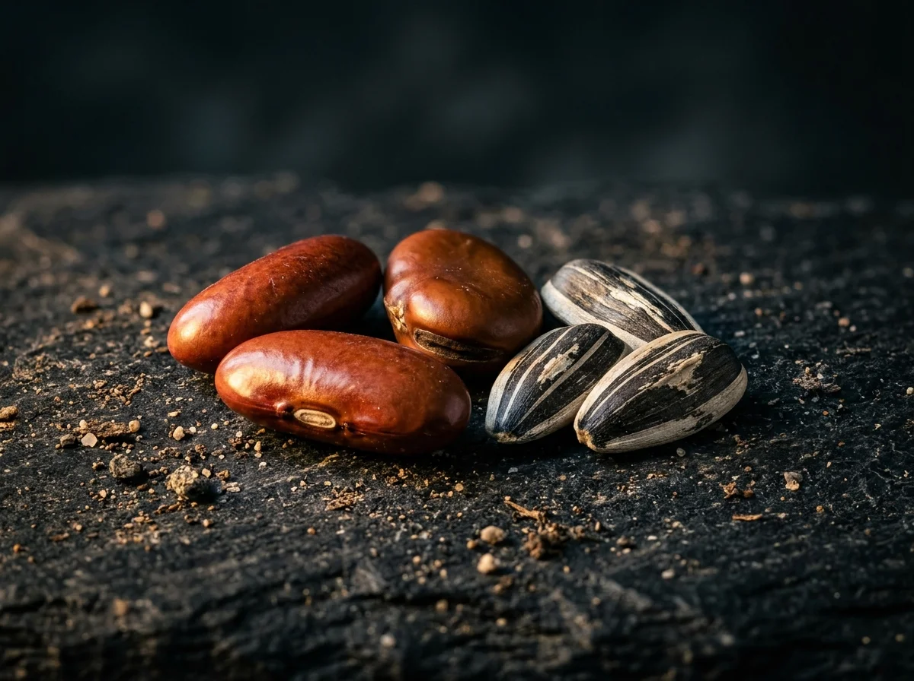

What you need to know (Edexcel IGCSE specification 1.1–1.4)
- 1.1understand how living organisms share the following characteristics: they require nutrition; they respire; they excrete their waste; they respond to their surroundings; they move; they control their internal conditions; they reproduce; they grow and develop
- 1.2describe the common features shown by eukaryotic organisms: plants, animals, fungi and protoctists
- 1.3describe the common features shown by prokaryotic organisms such as bacteria
- 1.4understand the term ‘pathogen’ and know that pathogens may include fungi, bacteria, protoctists and viruses
1a Characteristics of living organisms 1.1
All living organisms — from single-celled bacteria to plants and humans — carry out the same eight life processes. Remember them with MRS C GREN:
Question: Moon jellyfish drift with ocean currents, yet they are living organisms. Give three pieces of evidence that show a jellyfish is living, linking each to a life process. [3]
- Nutrition & sensitivity: It detects and stings prey with its tentacles to take in food.
- Movement & respiration: It pulses its bell to swim, using energy released from nutrients inside its cells.
- Reproduction & growth: It releases eggs and sperm to produce larvae that grow and develop into adult jellyfish.

Now you try: why is a dry seed living, while a campfire is not?


A dry seed IS living: it is dormant — made of living cells that respire very slowly and will carry out all eight processes of MRS C GREN once it germinates.
- Respiration is NOT breathing! Every living cell respires to release energy, including plants and bacteria — they do not have lungs or breathe.
- Excretion is NOT passing faeces! Excretion removes metabolic waste made by cell reactions (CO2, urea). Passing undigested food out as faeces is egestion.
Quick check
0 / 2 doneEukaryotes: plants & animals 1.2
Living organisms are grouped into 5 kingdoms: four eukaryotic kingdoms (cells have a nucleus: animals, plants, fungi, protoctists) and one prokaryotic kingdom (cells have no nucleus: bacteria). Viruses are not living and are not a kingdom.
Comparing animals and plants
| Feature | Animals | Plants |
|---|---|---|
| Organisation | Multicellular eukaryotes | Multicellular eukaryotes |
| Cell wall | None | Made of cellulose |
| Chloroplasts & nutrition | None — feed on other organisms | Contain chloroplasts — carry out photosynthesis |
| Carbohydrate store | Glycogen | Starch (or sucrose) |
| Coordination & movement | Have nervous coordination; usually move from place to place | No nervous system; do not move from place to place |
| Spec examples | Mammals (e.g. humans), insects (e.g. housefly, mosquito) | Flowering plants: a cereal (maize) and a herbaceous legume (peas or beans) |
Animal cell
Plant cell
Quick check
0 / 2 doneFungi & protoctists 1.2
Fungi
- Eukaryotic — cannot photosynthesise (no chloroplasts).
- Cell walls are made of chitin (not cellulose), and they store carbohydrate as glycogen.
- Usually multicellular with a body called a mycelium made of thread-like hyphae containing many nuclei (e.g. Mucor, bread mould). Some are single-celled (e.g. yeast).
- Feed by saprotrophic nutrition: hyphae secrete digestive enzymes onto dead organic matter (extracellular digestion) and absorb the soluble products.
Fungal hypha (e.g. Mucor)
Yeast (single-celled fungus)
Question: Describe how a fungus such as Mucor obtains nutrition from a slice of bread. [3]
- The hyphae secrete digestive enzymes onto the bread (outside the fungus).
- The enzymes break down large insoluble molecules (e.g. starch) into small soluble molecules (e.g. glucose) — extracellular digestion.
- The soluble products are absorbed back into the hyphae by diffusion.

Now you try: give two reasons why a mushroom is classified as a fungus, not a plant.
Protoctists
- Microscopic, mostly single-celled eukaryotes (have a nucleus) that do not fit into the other kingdoms.
- Some are animal-like (e.g. Amoeba, lives in pond water); others have chloroplasts and are plant-like (e.g. Chlorella).
- Some are pathogens — Plasmodium is a protoctist that causes malaria.
Amoeba (animal-like)
Chlorella (plant-like)
Quick check
0 / 2 doneBacteria (prokaryotes) 1.3
- Microscopic, single-celled prokaryotes — they have no nucleus!
- Instead, their genetic material is a circular chromosome of DNA free in the cytoplasm, plus small rings of extra DNA called plasmids.
- They have a cell wall (made of peptidoglycan — not cellulose), cell membrane, cytoplasm and ribosomes. Some have a whip-like flagellum for movement.
- Most feed off living or dead organisms (a few can photosynthesise).
- Spec examples: Lactobacillus bulgaricus (rod-shaped, makes yoghurt from milk) and Pneumococcus (spherical, causes pneumonia).
Rod-shaped bacterium
Spherical bacterium
Summary: the 5 kingdoms at a glance
| Kingdom | Nucleus? | Cell wall | Carbohydrate store | Spec examples |
|---|---|---|---|---|
| Animals | Yes (eukaryote) | None | Glycogen | Humans, housefly, mosquito |
| Plants | Yes (eukaryote) | Cellulose | Starch / sucrose | Maize (cereal), peas/beans (legume) |
| Fungi | Yes (eukaryote) | Chitin | Glycogen | Mucor (hyphae), yeast (single-celled) |
| Protoctists | Yes (eukaryote) | Some (e.g. Chlorella) | Varies | Amoeba, Chlorella, Plasmodium |
| Bacteria | No (prokaryote) | Peptidoglycan | Glycogen | Lactobacillus bulgaricus, Pneumococcus |
Quick check
0 / 2 donePathogens & viruses 1.4
A pathogen is a microorganism that causes infectious disease. Pathogens include bacteria, fungi, protoctists, and viruses.
Viruses (not living!)
- Much smaller than bacteria — visible only with an electron microscope.
- Not made of cells: no nucleus, no cytoplasm, no cell membrane and no ribosomes.
- Simple structure: a protein coat surrounding one type of genetic material (DNA or RNA).
- All viruses are parasites: they can only reproduce inside living host cells, and can infect every type of living organism.
Virus structure
Pathogens to know for IGCSE
| Pathogen type | Named example | Disease / effect |
|---|---|---|
| Virus | Tobacco mosaic virus (TMV) | Prevents chloroplasts forming in plants → discoloured (mosaic) leaves |
| Virus | Influenza virus | Flu (respiratory infection in humans) |
| Virus | HIV | Damages immune system → leads to AIDS |
| Bacterium | Pneumococcus | Pneumonia (lung infection) |
| Protoctist | Plasmodium | Malaria (spread by mosquitoes) |
| Fungus | e.g. athlete's foot fungus | Skin infections / plant blights |
Beyond IGCSE Relative scale: viruses vs bacteria vs eukaryotic cells
Viruses are typically 20–300 nm across (electron microscope only); bacteria are around 1–5 µm (10–100× larger than viruses); animal and plant cells are typically 10–100 µm (easily seen with a school light microscope).
Quick check
0 / 2 doneEnd-of-topic test
Test yourself without looking back! Answer the multiple-choice questions, write your own long answers, then check the mark schemes.